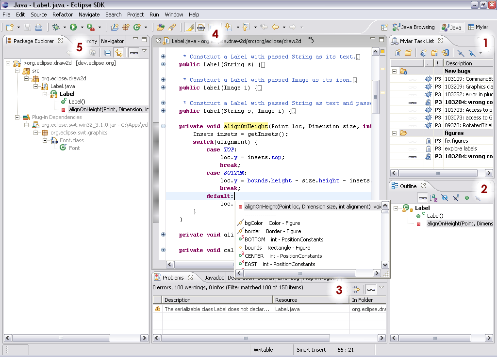

Mylar Overview
This preview release of Mylar is sparsely document. For questions about usage please feel free to email
mylar@cs.ubc.ca or
mylar-users@eclipse.org.
Report bugs to:
https://bugs.eclipse.org/bugs/enter_bug.cgi?product=Mylar
As you work on programming tasks, Mylar watches your activity and creates
a task context. This context is associated with the task that you have
activated. Mylar extends Eclipse structure views and editors to show
you only what you're working on by focusing on the task context, and to
highlight the degree of interest of the program structure that you are
working on. The following list and figure summarize the core Mylar
features.
- Use the task list to create tasks and categories. You can also
add a bugzilla report as a task, or create a bugzilla query as a
category. A task context is activated by clicking the gray
glasses, which causes the task and its category to become bold.
Note that tasks can show up in multiple categories (e.g. as a result of
a query, as in the figure below). To disable the context click the
glasses again. If you are using bugzilla reports you must
configure the Bugzilla server first (Preferences -> Bugzilla). If
you double-click a Bugzilla report it will open with the internal
browser, or with a Bugzilla Editor if you set Preferences -> Mylar ->
Task List accordingly.
- Click the Mylar glasses to filter out all uninteresting elements
(i.e. those not a part of the task context), shown here on the Outline
view. You will notice that views with Mylar filtering update
automatically as you work. Toggle this button to switch between
the standard view mode and the Mylar interest filtering. If you
have no task context active and all of the Mylar glasses are toggled off
all of the Mylar functionality is disabled.
- The Problems list can be filtered just like the outline.
- The editor provides an automatic folding feature that can be toggled
using the toolbar button next to "Mark Occurrences". When enabled
all uninteresting elements will be folded, an interesting elements
unfolded. Note that if you use the Mylar Java editor for ".java"
files the highest interest elements will be moved to the top of the
content assist list.
- Mylar filtering works in the Package Explorer as well.
Elements that are not a part of the task context show up in gray
consistently throughout the views. The highest interest elements,
called Landmarks, show up in bold.

Also see the New & Noteworthy.